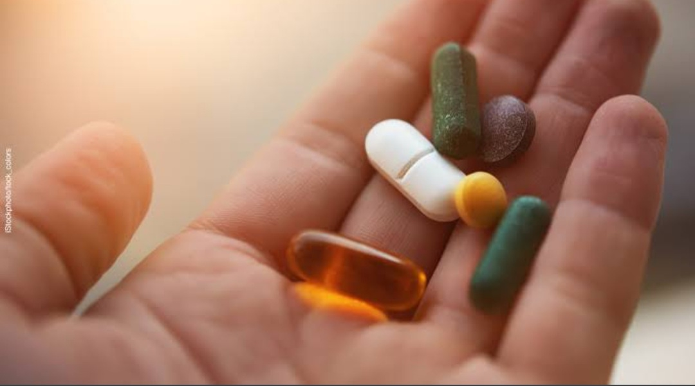

GALLIPOT
"WE ARE HERE"
A user-friendly 24*7 drug donation system that helps the user to donate unused medicines to NGO's and the needy.
Our Project GALLIPOT drives the future of healthcare by connecting people with surplus medications. This unused medicine donation project aims to donate medicines. The unused medicine can be donated for further utilization by a needy person.
